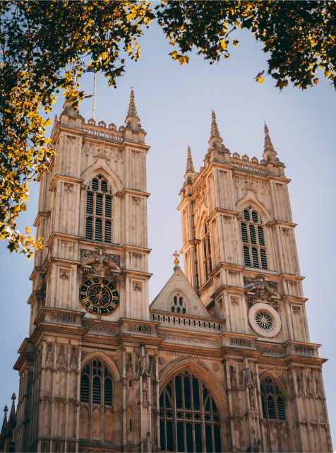

Город мечты - ЛОНДОН
Твой гид онлайн
Узнать больше


Доступные маршруты
маршрут #12
Исторический центр
Исторический центр Лондона получил название Вестминстер или дословно «западная церковь монастыря». Действительно, в 7 веке данный район начал формироваться вокруг развивающейся обители монахов. Со временем округ рос и на данный момент к нему присоединены предместья Паддингтон и сэнт-Мэрилибоун.
Кроме Вестминстерского дворца в историческом центре Лондона находится знаменитая Трафальгарская площадь с колонной Нельсона. Именно она становится венцом, который соединяет три ведущие улицы Вестминстера – Мэлл, Стрэнд и Уайтхолл.
